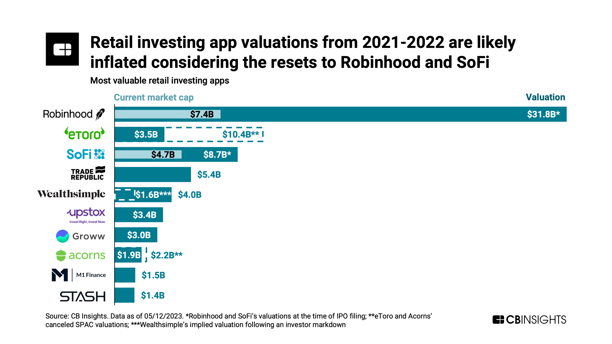

Starting Robinhood

The COVID years
More on Robinhood
Robinhood
- Rising from the shadows of the economic crisis that unfolded in the 2010s,
- Robinhood Markets, Inc. (ticker: HOOD) is a financial services company known for offering commission-free trading of stocks, options, ETFs, and cryptocurrencies through its app and platform. Founded in 2013 by Vlad Tenev and Baiju Bhatt, Robinhood’s mission is to democratize finance and make trading accessible to everyone, especially people who may not have traditionally engaged in the stock market due to high fees or complexity.
Robinhood went public in July 2021, listing its shares on the NASDAQ under the ticker symbol HOOD. The IPO was priced at $38 per share, and the company raised around $2.1 billion in the process. Since then, its stock has experienced significant volatility, largely due to factors such as market conditions, user growth, and regulatory scrutiny.
Key Features of Robinhood:
- Zero-Commission Trading: Robinhood popularized commission-free trading, allowing users to buy and sell stocks and options without paying traditional broker fees.
- Fractional Shares: This feature enables users to buy portions of high-priced stocks with as little as $1, making investing more accessible.
- Cryptocurrency Trading: Robinhood also offers the ability to buy and sell cryptocurrencies like Bitcoin, Ethereum, and others.
- User-Friendly Interface: The app’s simple design appeals to beginner investors, providing an easy-to-navigate experience.
Performance & Growth:
- Robinhood has seen massive growth, particularly during the COVID-19 pandemic when retail trading surged. The platform benefited from the rise of retail traders, often referred to as “memesters,” and events like the GameStop short squeeze in early 2021.
- However, the company has faced some challenges, such as regulatory scrutiny (due to its payment-for-order-flow business model) and concerns over its profitability. For example, Robinhood earns revenue by selling customer orders to market makers, a practice that has drawn attention from regulators and investors alike.
- The stock price has been volatile since its IPO, influenced by market sentiment, trading trends, and the performance of the broader financial markets.
Controversies & Challenges:
- Payment for Order Flow: Robinhood’s practice of selling customer orders to market makers has raised concerns about whether users are getting the best prices for their trades.
- System Outages: Robinhood has faced criticism for its technical issues, including outages during periods of high trading volume.
- Regulatory Pressure: As Robinhood grows, regulators are increasingly examining its practices, including its crypto trading and options trading services.
In summary, Robinhood has positioned itself as a major player in the fintech space, challenging traditional brokerage firms with its zero-fee, user-friendly platform. Its stock (HOOD) is closely watched by investors, especially those interested in the broader trend of retail investing and the rise of commission-free trading.
- Financial Performance
- Stock Performance
- Robinhood went public in 2021 with an initial price of $38 per share. Over the course of 4+ years, it reached its lowest of $7.95 at the end of 2022 and the maximum of $56.27 at the start of this year. This has largely been attributed to market swings caused by collapse of FTX as well as the the political fortunes of President Trump who regained the white house in Jan 20, 2025.
Robinhood Markets Inc. (HOOD) has experienced a significant increase in its stock price over the past year, rising approximately 440%. Several key factors have contributed to this surge:
Robust Financial Performance: In 2024, Robinhood reported its first annual profit of $1.56 per share, surpassing expectations. The company’s revenue grew by 58% to $2.95 billion, with transaction-based revenue increasing by 110% to $1.65 billion. Notably, cryptocurrency transactions played a significant role in this growth.
Expansion of Cryptocurrency Services: Robinhood has been actively expanding its cryptocurrency trading operations. The acquisition of Bitstamp for $200 million enhanced its crypto offerings, attracting institutional clients and supporting global expansion. This strategic move has positioned the company to capitalize on the growing interest in digital assets.
Regulatory Developments: The U.S. Securities and Exchange Commission (SEC) recently closed its investigation into Robinhood’s cryptocurrency unit without pursuing any enforcement action. This outcome has alleviated regulatory uncertainties, boosting investor confidence.
User Growth and Asset Accumulation: Robinhood’s user base has been steadily increasing. As of July 2024, the platform had 24.2 million funded accounts, up by approximately 70,000 from the previous month. Assets under custody reached $144.5 billion, a 3% rise from the prior month and a 53% increase year-over-year. citeturn0search1
Product Innovation and Global Expansion: The company has been proactive in introducing new products and expanding internationally. Initiatives such as the Robinhood Wallet, enhanced services for Gold customers, and retirement account programs have been launched. Additionally, Robinhood has expanded into markets in the UK and Europe, broadening its global presence.
These developments have collectively contributed to the substantial rise in Robinhood’s stock price, reflecting the company’s strengthened market position and growth prospects.
Robinhood’s Strategic Moves and Regulatory Relief Propel Stock Surge
Robinhood Markets, Inc. has demonstrated notable user growth from 2022 through early 2025. Here’s a detailed overview:
Robinhood Plots Expansion To Capture Share Of $84 Trillion Wealth Transfer
Reuters - US SEC closes investigation into Robinhood’s crypto arm with no action
Robinhood Plans Ambitious Crypto Expansion Under Trump Administration